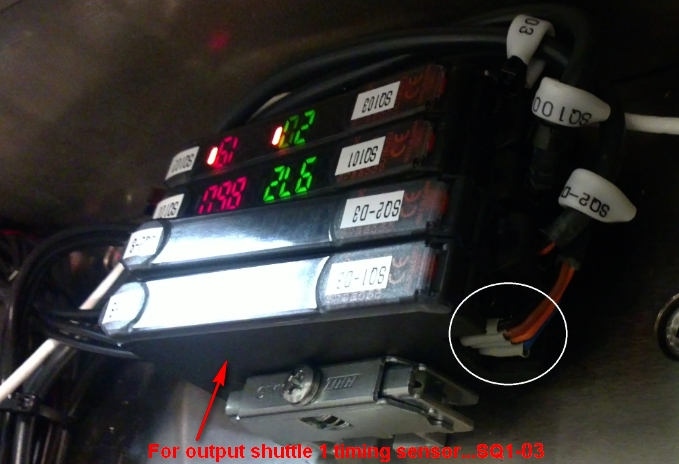
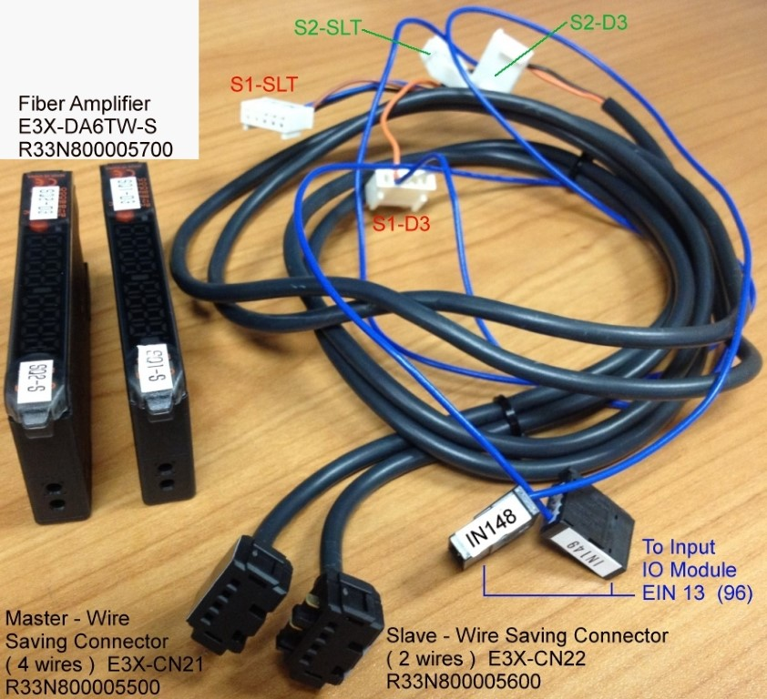
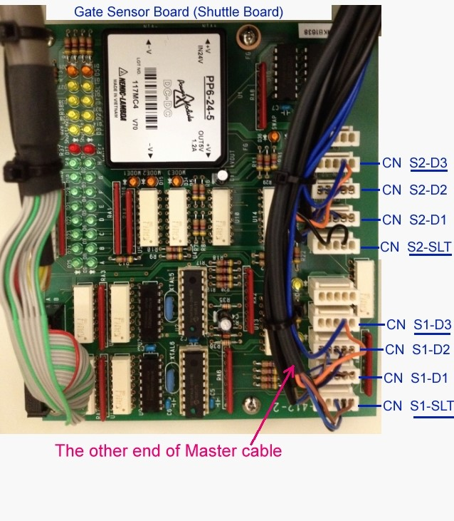
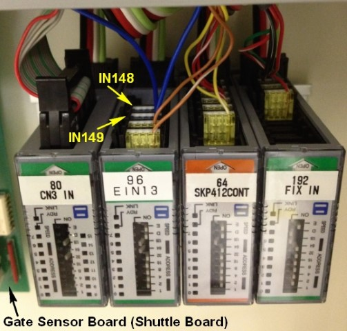

Service History
Subject: NS-8080 Connector broken at Amplifier (for Output Shuttle 1 Timing sensor)
Handler Model: NS-8080 (S/N: 182094, ) STAgrate
Controller: RC520 (S/N: 03-02318) HMI: I11.22 MSM
Date: 15 Jun 2012
Symptom
One of the sensor wire was broken.
Please refer to attached picture where wire broken.
It is for output shuttle 1 timing sensor...SQ1-03.
Can you kindly check If you have spare for this? If not, we have to remove from our NS8080.
Temporary solder pins to amplifier directly but unable to be installed together with SQ2-03 because connector was damaged.
Now temporary soldered directly and SQ2-03 no power since unable to be installed with SQ1-03..
Currently running only arm 1 while waiting for the pin.
Therefore, we need amplifier and cable/connector x 1 set down to shuttle board a.s.a.p.
Kindly let us know if have spare, else may have to remove from handler to send to ST Agrate.

Action
The items to send to ST Agrate are:
- Fiber Amplifier E3X-DA6TW-S x02 pcs (for Output Shuttles timing Sensors)
- Master & Slave cables x01 set


for the Master Connector, the other end of 4 wires split into 2 molex connectors and connect to Shuttle Board:
- Orange & Blue wire with molex connector go to S1-D3
- Black, Brown & Blue with molex connector go to S1-SLT
for the Slave Connector, the other end 2 wires split into 2 molex connectors and connect to Shuttle Board:
- Orange & Blue wires with molex connector go to S2-D3
- Black wire with molex connector go to S2-SLT

- E3X-DA6TW-S x02 pcs
- Master Cable - complete set
- Slave Cable - complete set
- some cable ties
E3X-MDA6 is equipped with 2 channels but got total 4 ports for inserting the 4 fiber cables. (one beam out light and the other receive light as a pair, so total 2 pairs for 4 holes).
(E3X-MDA6 is also use for Input Shuttles Device presence & floating. Channel 1 for Input Shuttle 1 and Channel 2 for Input Shuttle 2).
In ST Agrate case, as from what you mentioned E3X-MDA6 also use for Device in Socket sensor.
E3X-DA6TW-S is ALSO equipped with 2 channels BUT got total 2 ports for inserting 2 fibers cable(one beam out light and the other receive light).
This amp can use for Timing sensor and Retro fit kit, so have 2 channels.
Cause
Remarks
From picture you can see extend of damage.
First 2 pair is the same as our office. (left to right of connectors damaged.jpg)
the next 2 pair is for socket sensor.
the first sensor amplifier is the one that was cut and can only direct solder.
but because the connector damage, unable to connect to slave of the 2nd sensor amplifier.
so we’re running single shuttle/only index arm 1.
Hope to receive the parts because octal loadboard is coming this week.
We have 4 sensors amplifiers total and information as follows:
- MODEL: E3X-DA6TW-S (first 2 sensor dedicated to buffer position) and E3X-MDA6 (last 2 sensor dedicated to QUAD/OCTAL Socket Sensor)
- Sensor wire damage is MASTER CONNECTOR (E3X-DA6TW-S)
- Sensor is 2 channel and 2 wire
Sorry for the trouble but I need you guys to remove from office NS8080 the first 2 sensors amplifier with the connection right up to shuttle board including the connectors.
So that when I receive, I only need to install back.
Before you guys remove:
- confirm both should be E3X-DA6TW-S.
- take picture and make necessary documentation of 1st amplifier to which connectors of shuttle board
- take picture and make necessary documentation of 2nd amplifier to which connectors of shuttle board
- try to remove before lunch if possible and send to KG to have them rush it out before end of the day
Btw, what is the difference of EX3-DA6TW-S and EX3-MDA6?
Cause both has master (ST uses the 2nd one for socket sensor for quad and octal)
If I not wrong, EX3-MDA6 has 1 channel but EX3-DA6TW-S has 2 channel?
Customer actually wants to replace the 3rd sensor amp (from left to right) which is EX3-MDA6 because the wires are exposed.
Winston has stock (4 wires but he does not have for slave which is 2 wires) but he does not have the molex and pins and I don’t think we have in office?
So I’m going to tell customer at most we’ll replace for the 1st 2 sensor amps.
So, sorry to trouble u guys, I need you guys to remove from our handler.